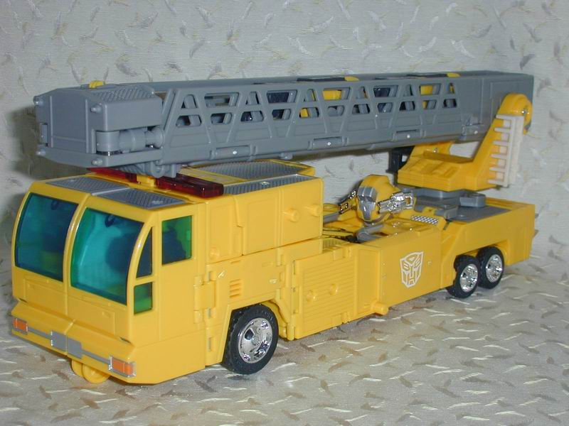
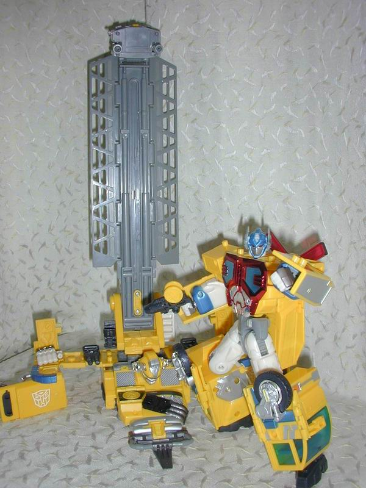
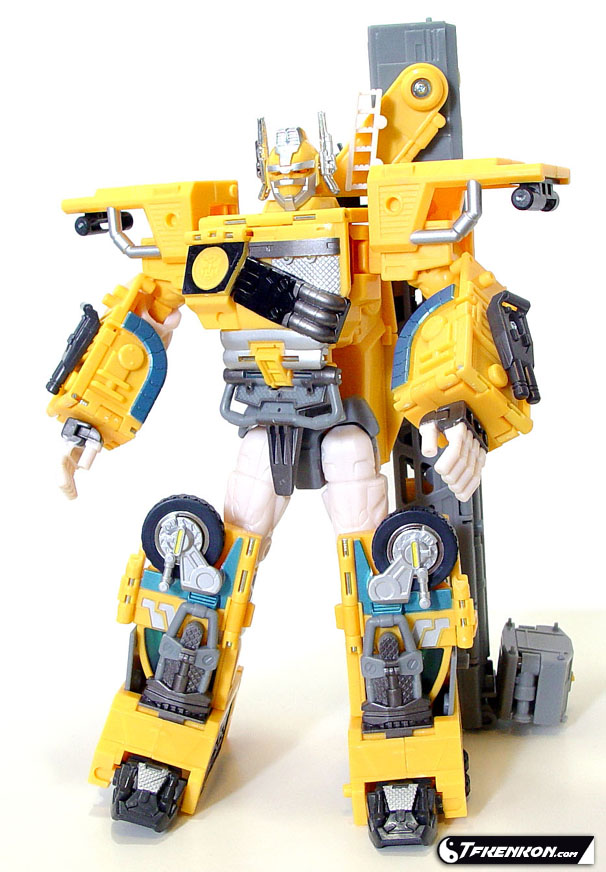
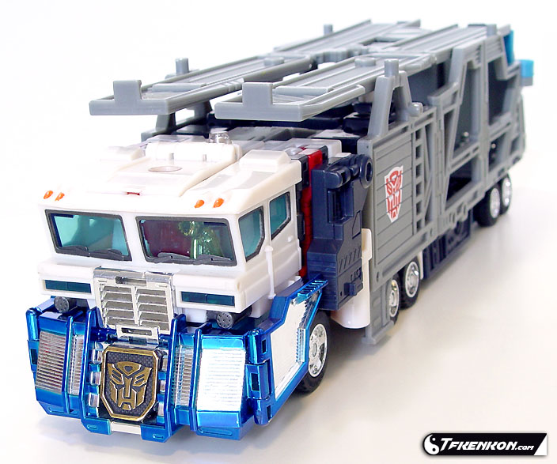
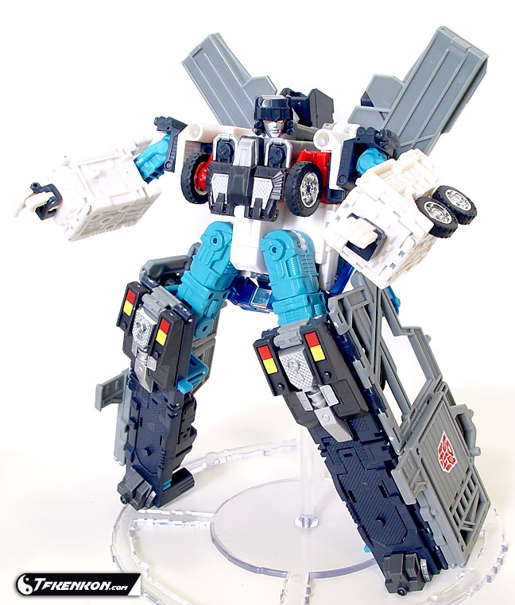
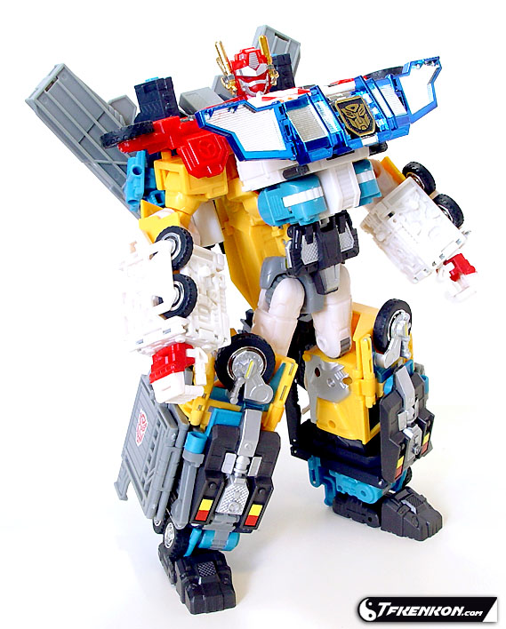

Optimus
Prime and Ultra Magnus (Super, Universe) (Sam's Club Exclusives)
Optimus
Prime and Ultra Magnus (Super, Universe) (Sam's Club Exclusives)
(NOTE: Since I don't have much to say about
each of these toys individually, I've decided to review them both on one
page.)
Optimus
Prime



Allegiance
: Autobot
Size
: Super (although it retails
for $17 U.S.)
Difficulty of Transformation
: Hard
Color Scheme
: Banana yellow, light
gray, silver, transparent light blue, dark gray, light orange, chrome silver,
chrome red, off-white, sparkly blue, and some transparent dark red, chrome
gold, light sparkly blue, and light black
Rating
: 8.7
(NOTE: Because this is a repaint, this is
not a full-blown review. This mainly covers any changes made to the mold
and the color scheme, and merely compares it to Robots in Disguise Super
Optimus Prime. For a review on the mold itself, read the review of RiD
Super Optimus Prime
here
.)
Egads, what a lazy repaint.
All they did was take RiD Prime's much better-looking red and replace it
with a weird banana yellow. And... that's it. Everything else is the exact
same. The toy itself isn't bad- as you can see from the rating I gave it-
but the sheer laziness of this repaint is what angers me. Plus, the yellow
simply doesn't work as well for him as the red did, especially with that
red chest and sirens that he still has. HOWEVER.... Universe Optimus Prime
is danged cheap. Like you get a $30 for $17- that's almost 50% off! That's
a heck of a deal.
No mold changes have
been made to Universe Optimus Prime.
Optimus Prime is sure
a lazy repaint... but he is pretty cheap. However, even with this price
decrease, I'd still recommend the original RiD Prime over this guy, since
that yellow simply doesn't work as well with him. Mildly recommended if
you don't have RiD Prime and don't feel like searching for him; otherwise,
not recommended even for completists.
No Stats
Ultra
Magnus


Allegiance
: Autobot
Size
: Super (although it retails
for $17 U.S.)
Difficulty of Transformation
: Very
Hard
Color Scheme
: Light gray, bluish
black, light blue, light black, white, dark gray, red, chrome silver, and
some chrome dark blue, bright yellow, neon orange, chrome gold, and transparent
light blue
Rating
: 7.4
(NOTE: Because this is a repaint, this is
not a full-blown review. This mainly covers any changes made to the mold
and the color scheme, and merely compares it to Robots in Disguise Super
Ultra Magnus. For a review on the mold itself, read the review of RiD Super
Ultra Magnus
here
.)
An even lazier repaint
than Universe Prime, Universe Magnus again has only one color changed,
but this time it's a much less apparent color change. His dark blue has
been changed to a blusih-black, and it's only really apparent on his legs.
Big whoop. He is $13 cheaper than the other Ultra Magnus, though...
No mold changes have
been made to Universe Ultra Magnus.
I'd have to recommend
Universe Magnus over RiD Magnus for the sole reason that he's $13 cheaper,
and the bluish-black looks ever-so-slightly better on him than the dark
blue did. However, if you already have RiD Magnus, I can't recommend him
under any circumstances.
No Stats
Omega
Prime (Combination of Optimus Prime and Ultra Magnus)

Allegiance
: Autobot
Size
: Gestalt (combination of one
Super and part of another one)
Difficulty of Transformation
: Very
Hard
Color Scheme
: White, banana yellow,
transmetal silver, transmetal dark blue, dark gray, light gray, bluish
black, light blue, silver, and some transmetal gold, yellow, neon orange,
light black, and transparent light blue
Rating
: 7.8
(NOTE: Because this is a repaint, this is
not a full-blown review. This mainly covers any changes made to the mold
and the color scheme, and merely compares it to Robots in Disguise Omega
Prime. For a review on the mold itself, read the review of RiD Omega Prime
here
.)
Again, Omega Prime has
only had two color changes; the dark blue has been changed to bluish black
and the red to banana yellow (most of it, anyways; the parts from Ultra
Magnus are still red, and it sure clashes). Although the bluish black isn't
bad, the banana yellow completely clashes with every other color. It simply
should NOT be there. I don't know what the color designers were thinking
with this one...
No mold changes have
been made to Omega Prime.
Omega Prime is a great
gestalt, but even for the combined price of $34 U.S. (as opposed to $60),
he just looks bad. I'd recommend the original one over this guy, and I
DEFINITELY wouldn't purchase either component if you already have the original
version.
No Stats
Reviews by Beastbot
(Pictures courtesy of
TFKenkon.com
.)
Back to Transformers:
Universe Index